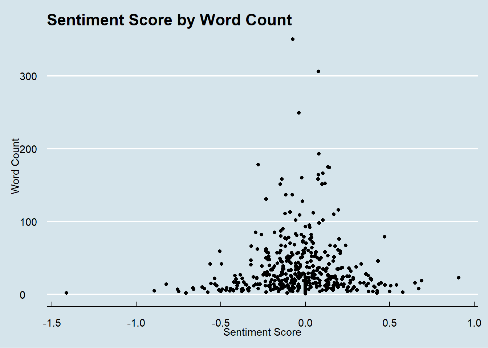
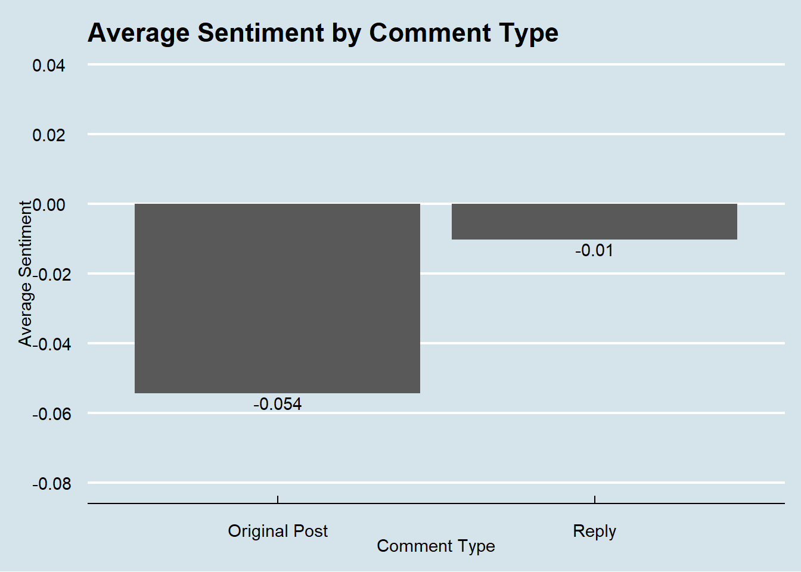

Sentiment Analysis on Reddit Threads
Andrew Borozan
2022-03-09
Here is a cool little project to take the temperature of the masses. We are going to scrape comments off of a Reddit thread and then run a sentiment analysis on these comments.
First, let’s load in some packages that may (or may not) help us.
library(pacman)
p_load(tidyverse, rmarkdown, magrittr, lubridate, janitor, ggthemes, knitr, rvest, reactable, RSelenium, stringr.plus, RedditExtractoR, sentimentr)We are first going to scrape some Reddit comments off of a thread. In efforts to make the material juicy, we are going to head to the political subreddit and pick the top thread from there. Lucky us, we got an article on Republicans being more favorable towards Putin than they are to leaders in the Democratic Party. Putin evokes a lot of sentiment, one way or the other, so we should have some good material here. We use the RedditExtractoR’s get_thread_content function to extract all of the comments at the time and place them into a two item list. The items in the list are data frames, the first with metadata about the thread, the second containing the users, comments, and other information regarding each post. One row of the second data frame is given as an example of the type of information contained in the data frame.
Politics <- get_thread_content("https://www.reddit.com/r/politics/comments/szjnqw/republicans_view_putin_more_favorably_than_they/")
reactable(Politics[[1]])reactable(Politics[[2]][9, ])We are going to place the data frame with the comments into an object…
Putin_comments <- Politics[[2]]Next, we are going to run a sentiment analysis using sentimentr (which does a good job at identifying “valence shifters” - words that shift the meaning of the overall sentence - in relation to other sentiment analysis tools). We can see the sentiment by both sentence and by user using different functions of sentimentr.
(comment_sentiment_by_sentence <- sentiment(Putin_comments$comment))## element_id sentence_id word_count sentiment
## 1: 1 1 22 0.67158226
## 2: 1 2 10 0.07905694
## 3: 1 3 27 -0.92376043
## 4: 1 4 12 0.14433757
## 5: 1 5 38 0.32444284
## ---
## 1165: 492 1 12 0.18763884
## 1166: 493 1 9 -0.46666667
## 1167: 494 1 9 -0.10000000
## 1168: 495 1 2 0.00000000
## 1169: 495 2 18 -0.12963624(comment_sentiment_by_user <- sentiment_by(Putin_comments$comment))## element_id word_count sd ave_sentiment
## 1: 1 178 0.49036849 0.18815541
## 2: 2 7 NA 0.01889822
## 3: 3 92 0.31218388 0.02674171
## 4: 4 57 0.10393509 0.03426998
## 5: 5 6 NA 0.24494897
## ---
## 491: 491 6 NA -0.08164966
## 492: 492 12 NA 0.18763884
## 493: 493 9 NA -0.46666667
## 494: 494 9 NA -0.10000000
## 495: 495 20 0.09166667 -0.07074073Let’s get rid of some of the superfluous columns in the data frame (there were no downvotes, for example, so we can jettison that column) and add the information from our sentiment analysis. We will also get rid of the moderator comment (the first row in the data set) and rename the author column to user. We can add a column to signify if this post was an original post or a reply to a previous post.
cleaned_comments <- cbind(Putin_comments, word_count = comment_sentiment_by_user$word_count, sd = comment_sentiment_by_user$sd, avg_sentiment = comment_sentiment_by_user$ave_sentiment)
cleaned_comments <- cleaned_comments %>% select(-c("url", "date", "score", "downvotes", "golds"))
cleaned_comments <- cleaned_comments[-1, ]
cleaned_comments <- cleaned_comments %>% rename(user = author)
cleaned_comments <- cleaned_comments %>% mutate(comment_type =
ifelse(grepl("_", cleaned_comments$comment_id), "Reply", "Original Post"))We will make a quick histogram to see the overall tenor of the comments:
cleaned_comments %>% ggplot(aes(avg_sentiment)) + geom_histogram()+
labs(x = "Sentiment Score",
y = "Frequency of Score",
title = "Overall Sentiment of Reddit Posts")+
theme_economist()
Many of the comments hover around a neutral score. It would be interesting to do further analysis to see if this is the case for other Reddit threads or if this is a feature of the sentimentr package.
One fun thing to do is map this sentiment by word count. Is the sentiment score affected by the number of words?
ggplot(cleaned_comments, aes(avg_sentiment, word_count)) + geom_point() +
labs(x = "Sentiment Score",
y = "Word Count",
title = "Sentiment Score by Word Count")+
theme_economist()
Looking very similar to our histogram above. Let’s see the average sentiment score and the proportion of positive and negative sentiment.
library(skimr)
summary(cleaned_comments$avg_sentiment)## Min. 1st Qu. Median Mean 3rd Qu. Max.
## -1.41421 -0.14427 0.00000 -0.02916 0.09083 0.90704total_count <- as.numeric(count(cleaned_comments))
cleaned_comments %>% filter(avg_sentiment > 0) %>% summarize(count = n()) %>% mutate(proportion_positive_comments = round(count/total_count, 3))## count proportion_positive_comments
## 1 192 0.389cleaned_comments %>% filter(avg_sentiment < 0) %>% summarize(count = n()) %>% mutate(proportion_negative_comments = round(count/total_count, 3))## count proportion_negative_comments
## 1 242 0.49It looks like overall, the general tone had a slightly negative sentiment. The overall average sentiment was a shade to the left of zero, and there was a higher proportion of negative comments to positive comments.
Let’s see if there is a difference in sentiment between original posts and replies.
cleaned_comments %>% group_by(comment_type) %>% summarize(average_sentiment = mean(avg_sentiment)) %>% ggplot(aes(comment_type, average_sentiment)) +
geom_bar(stat = "identity") + theme_economist()+
geom_text(aes(label = round(average_sentiment, 3)), vjust = 1.25) +
labs(x = "Comment Type", y = "Average Sentiment", title= "Average Sentiment by Comment Type")+
scale_y_continuous(breaks = seq(-.1, .04, .02), limits = c(-.08, .04))
Original posts, on the surface, seem to have more negative sentiment than replies.
Finally, does the number of upvotes suggest anything about the sentiment score of a post? (To make this a little cleaner, we will go with posts that received at least 5 upvotes.)
cleaned_comments %>% filter(upvotes > 4) %>% ggplot(aes(avg_sentiment, upvotes, color = comment_type)) + geom_point() + theme_economist() +
labs(x = "Sentiment Score", y = "Number of Upvotes", title = "Sentiment score and Upvote Relationship", color = "Comment Type")count_upvotes <- as.numeric(count(cleaned_comments %>% filter(upvotes > 4)))
cleaned_comments %>% filter(upvotes > 4, avg_sentiment > 0) %>% summarize(count_positive = n()) %>% mutate(proportion_positive_sentiment = round(count_positive/count_upvotes, 3))## count_positive proportion_positive_sentiment
## 1 108 0.391cleaned_comments %>% filter(upvotes > 4, avg_sentiment < 0) %>% summarize(count_negative = n()) %>% mutate(proportion_negative_sentiment = round(count_negative/count_upvotes, 3))## count_negative proportion_negative_sentiment
## 1 134 0.486It is a little more difficult looking at it from the plot, but when we look at the numbers we see that with posts that received at least 5 upvotes, there was a higher proportion (around 50%) that had a negative sentiment, than those which had a positive sentiment (around 40%).
This was a “scratch the surface” project on sentiment analysis on comments in a Reddit thread. It is merely a glimpse into the types of analysis that can be performed with these tools.